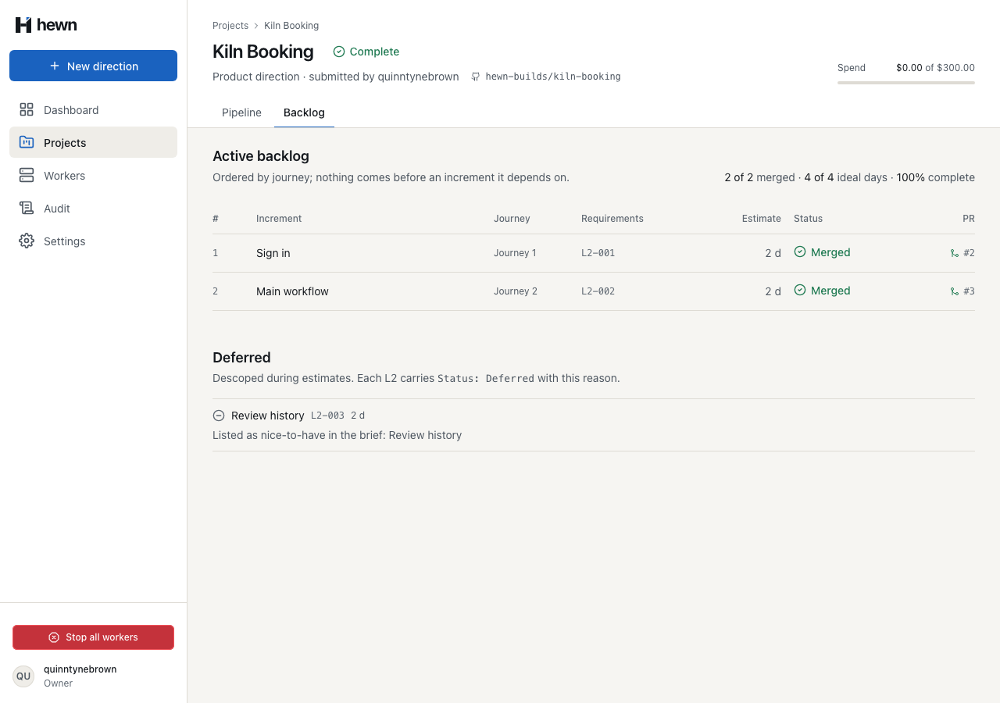
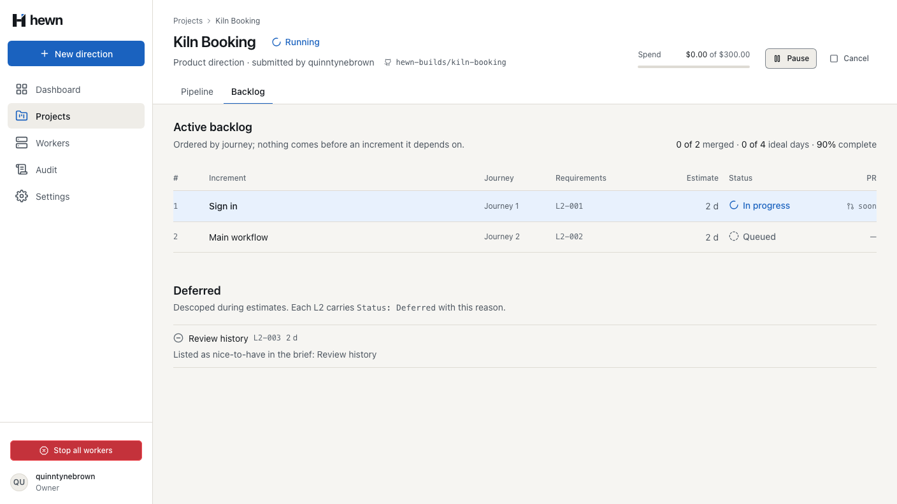
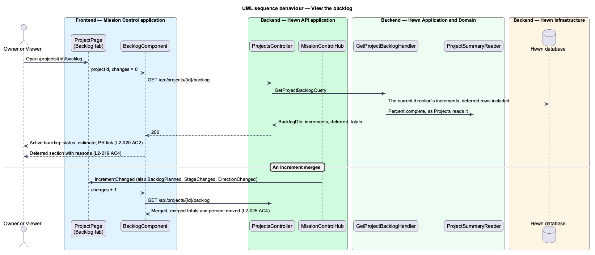
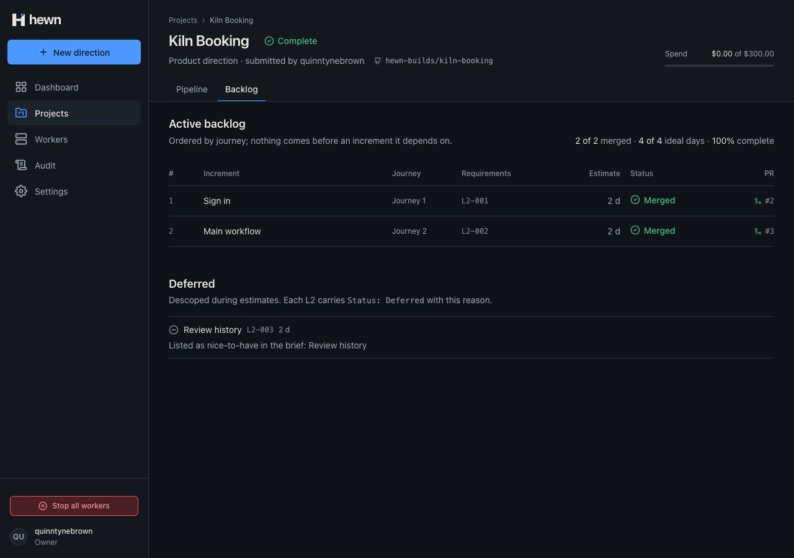
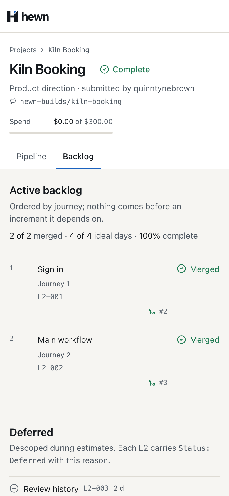
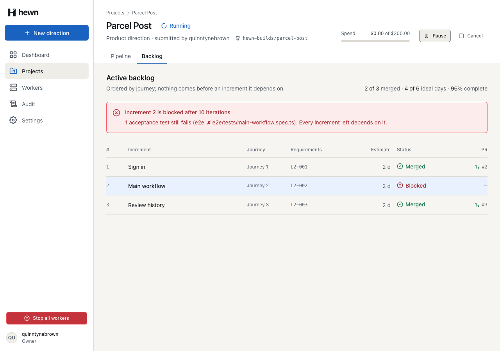
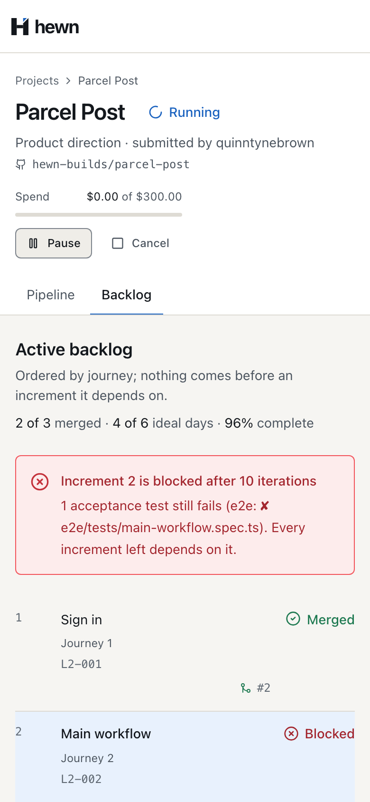

What comes next, what is being built, what has merged, and what was left out and why.



// The direction Projects describes: the active one, else the latest.
var direction = project.ActiveDirection ?? project.Directions.OrderByDescending(d => d.SubmittedAt).FirstOrDefault();
var rows = direction is null
? []
: await db.Increments.AsNoTracking().Where(i => i.DirectionId == direction.Id).ToListAsync(cancellationToken);
var increments = rows
.Where(i => i.Number != null)
.OrderBy(i => i.Number)
i.PullRequestNumber,
i.PullRequestNumber is { } n && project.Repository is { } repository ? $"https://github.com/{repository}/pull/{n}" : null))
var deferred = rows
.Where(i => i.Number == null)
.OrderBy(i => i.Title, StringComparer.OrdinalIgnoreCase)
.Select(i => new DeferredDesignDto(i.Title, Split(i.L2Ids, ','), i.EstimateDays, i.Reason ?? string.Empty))
.ToList();
var merged = increments.Where(i => i.Status == nameof(IncrementStatus.Merged)).ToList();
return new BacklogDto(
direction?.Id,
increments,
deferred,
merged.Count,
increments.Count,
merged.Sum(i => i.EstimateDays),
increments.Sum(i => i.EstimateDays),
summary.PercentComplete);
<nav class="phead__tabs" aria-label="Project sections">
<div class="tabs tabs--flush">
<a
class="tab"
[routerLink]="['/projects', p.id]"
[attr.aria-current]="section() === 'pipeline' ? 'page' : null"
>Pipeline</a
><a
class="tab"
[routerLink]="['/projects', p.id, 'backlog']"
[attr.aria-current]="section() === 'backlog' ? 'page' : null"
>Backlog</a
>
</div>
</nav>
switch (status) {
case 'InProgress':
return { status: 'Running', label: 'In progress' };
case 'Merged':
return { status: 'Succeeded', label: 'Merged' };
default:
return { status, label: status };
}
if (increment.pullRequestNumber !== null && increment.pullRequestUrl !== null) {
return {
kind: 'link',
text: `#${increment.pullRequestNumber}`,
href: increment.pullRequestUrl,
merged: increment.status === 'Merged',
};
}
return increment.status === 'InProgress' ? { kind: 'soon' } : { kind: 'none' };
const unreachable = new Set([blocked.number]);
for (const i of [...increments].sort((a, b) => a.number - b.number)) {
if (i.dependsOn.some((d) => unreachable.has(d))) unreachable.add(i.number);
}
const next = increments.find(
(i) => (i.status === 'InProgress' || i.status === 'Queued') && !unreachable.has(i.number),
);
const count = blocked.failingTests.length;
const failing = `${count} acceptance ${count === 1 ? 'test still fails' : 'tests still fail'} (${blocked.failingTests.join(', ')}).`;
return {
title: `Increment ${blocked.number} is blocked after ${blocked.iterations} iterations`,
body: next
? `${failing} Hewn moved on to increment ${next.number}, which doesn’t depend on it.`
: `${failing} Every increment left depends on it.`,
};
const BACKLOG_EVENTS = new Set([ 'BacklogPlanned', 'IncrementChanged', 'StageChanged', 'DirectionChanged', ]);
/** Counts the events that can change the backlog, so the Backlog tab reads it again after each (L2-025 AC4). */
protected readonly backlogChanges = toSignal(
this.events$.pipe(
filter((e) => BACKLOG_EVENTS.has(e.type)),
scan((n) => n + 1, 0),
),
{ initialValue: 0 },
);
/** "… Nice to have: review history and exports." → a brief section listing them, which stage 9 descopes (L2-019 AC2). */
function niceToHave(idea: string): string {
const named = /nice[ -]to[ -]have:\s*([^.]+)/i.exec(idea)?.[1];
if (!named) return '';
const items = named
.split(/,\s*|\s+and\s+/)
.map((i) => i.trim())
.filter(Boolean);
return `\n## Nice to have\n${items.map((i) => `- ${i.charAt(0).toUpperCase()}${i.slice(1)}`).join('\n')}\n`;
case 10: {
const increment = task.increment;
if (!increment) throw new Error('Stage 10 sessions name their increment.');
if (this.options.incrementDelayMs) await new Promise((done) => setTimeout(done, this.options.incrementDelayMs));
case 'implement':
if (this.options.blockIncrement && includes(increment.title, this.options.blockIncrement)) return;
write(
scriptedImplementation(test),
`/** ${increment.title} (${increment.l2Ids.join(', ')}). */\nexport const ${camel(increment.slug)} = true;\n`,
);
var before = await BacklogAsync(owner, projectId);
Assert.Equal(0, before.GetProperty("merged").GetInt32());
Assert.Equal(3, before.GetProperty("total").GetInt32());
Assert.Equal(0m, before.GetProperty("mergedDays").GetDecimal());
Assert.Equal(6m, before.GetProperty("totalDays").GetDecimal());
// Stages 0 to 9 succeeded: 10 of 11.
Assert.Equal(90, before.GetProperty("percentComplete").GetInt32());
await UpdateAsync(worker, run, 1, new { status = "InProgress" });
await UpdateAsync(worker, run, 1, new { status = "Merged", pullRequestNumber = 14 });
var after = await BacklogAsync(owner, projectId);
Assert.Equal(1, after.GetProperty("merged").GetInt32());
Assert.Equal(1.5m, after.GetProperty("mergedDays").GetDecimal());
// 10 stages and a third of stage 10, of 11.
Assert.Equal(93, after.GetProperty("percentComplete").GetInt32());
4 new, through the real API
4 worker, 6 frontend new
states, visual, a11y, live
// Stage 9: the backlog arrives, with the brief's nice-to-have deferred apart, with its reason (L2-019 AC4).
await expect(backlog.deferredItem(0).title).toHaveText('Review history', { timeout: 120_000 });
await expect(backlog.deferredItem(0).reason).toHaveText('Listed as nice-to-have in the brief: Review history');
await expect(backlog.rows.filter({ hasText: 'Review history' })).toHaveCount(0);
const total = await backlog.rows.count();
expect(total).toBeGreaterThan(0);
await expect(backlog.totals).toContainText(`0 of ${total} merged`);
// Stage 10: the first increment is built, then merged through its pull request (L2-020 AC2, L2-025 AC4).
const first = backlog.row(1);
await expect(first.status).toHaveText('In progress', { timeout: 60_000 });
await expect(first.status).toHaveText('Merged', { timeout: 60_000 });
await expect(first.pullRequest.getByRole('link', { name: /^#\d+$/ })).toBeVisible();
await expect(backlog.totals).toContainText(new RegExp(`[1-9]\\d* of ${total} merged`));
// Move the element by its sub-pixel offset so it starts on a whole pixel, as the same element does in the mock.
// A relative offset goes through layout, which snaps borders and text to the pixel grid as a static element's
// are; a transform would raster the element on its own layer at the fractional position.
const restore = await locator.evaluate((el: HTMLElement) => {
const before = el.getAttribute('style');
const r = el.getBoundingClientRect();
if (getComputedStyle(el).position === 'static') el.style.position = 'relative';
el.style.left = `${Math.round(r.x) - r.x}px`;
el.style.top = `${Math.round(r.y) - r.y}px`;
return before;
});



